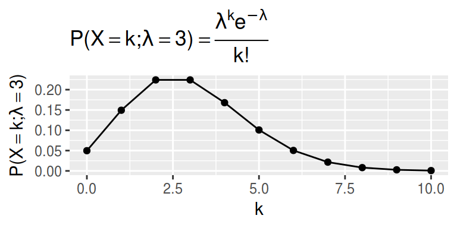
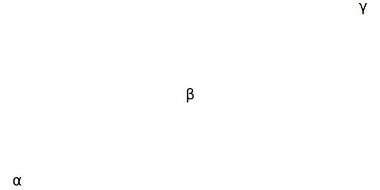
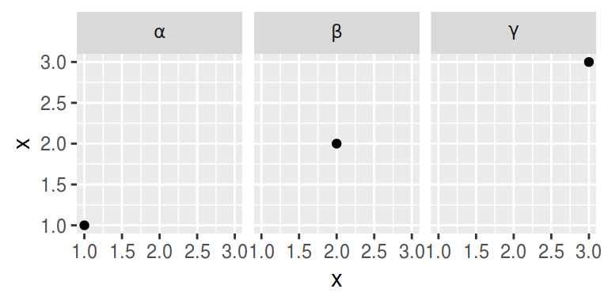

はじめに
ggplot2 で \(TeX\) 記法が使えると嬉しいですよね．
一応，そういう人たちのための入口としては expression だとか bquote だとかがあるんですが，ここでは紹介しません．
いえ，毎度使い方を忘れてしまい，紹介できないというのが正しいです．
そんな私に latex2tex パッケージ．
TeX() により， \(TeX\) 記法の文字列をRの expression に変換してくれます．
覚えることが少なくシンプルになっていいですね．
皆さんも是非．
library(latex2exp)
TeX('\\LaTeX')## expression(`\LaTeX` = paste("", L^{
## phantom()[phantom()[phantom()[scriptstyle(A)]]]
## } * T[textstyle(E)] * X))インストール
CRANにもありますが，後述の通りバグが放置されているのでGitHub版を薦めます．
devtools::install_github('stefano-meschiari/latex2exp')使ってみる
タイトルなどで \(TeX\)
labs() や ggtitle() ， xlab() ， ylab() では以下のように TeX() がとても活躍します．
library(tidyverse)
library(latex2exp)
d <- data.frame(x = seq(0, 10), y = dpois(x = seq(0, 10), lambda = 3))
ggplot(d, aes(x = x, y = y)) +
geom_point() +
geom_line() +
labs(
title = TeX('$P(X = k; \\lambda = 3) = \\frac{\\lambda^k e^{-\\lambda}}{k!}$'),
y = TeX('$P(X = k; \\lambda = 3)$'),
x = TeX('$k$')
)
geom_text で \(TeX\)
この場合，geom_text(aes(label = )) がcharacter型ベクトルしか受け付けないので注意が必要です．
github版の TeX() には output = 'character' というオプションがあるのでこれを利用しましょう．
その上で，geom_text(parse = TRUE) します．
d <- data.frame(
x = seq(3),
label = TeX(c('$\\alpha$', '$\\beta$', '$\\gamma$'), output = 'character')
)
ggplot(d, aes(x = x, y = x, label = label)) +
geom_text(parse = TRUE) +
theme_void()
そもそも，data frameが expression を受け付けないので， output = 'expression' ではどうしようもないのも確か．
CRAN版では output = 'text' というものが用意されていますが，返り値は expression のままなので注意 (バグ？)．
CRAN版を使う場合は as.character すると，GitHub版の output = 'character' 相当になります．
as.character(TeX('$\\alpha$', output = 'expression'))## [1] "paste(\"\", \"\", alpha, , , , \"\")"TeX('$\\alpha$', output = 'character')## $\\alpha$
## "paste('','',alpha,,,,'')"実際には上記の通り，エスケープを使うかどうかがちょっと違いますが，ちゃんと機能します．
d <- data.frame(
x = seq(3),
label = as.character(TeX(c('$\\alpha$', '$\\beta$', '$\\gamma$'), output = 'expression'))
)
ggplot(d, aes(x = x, y = x, label = label)) +
geom_text(parse = TRUE) +
theme_void()facet_wrap や facet_grid で \(TeX\)
facet の strip でも勿論 \(TeX\) できます．
この場合は，facet_wrap や facet_grid のオプションで， labeller = label_parsed します．
ggplot(d, aes(x, x)) +
geom_point() +
facet_wrap(~ label, labeller = label_parsed)